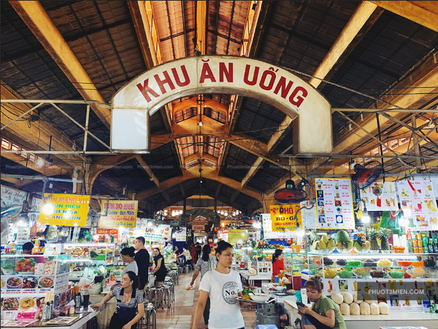
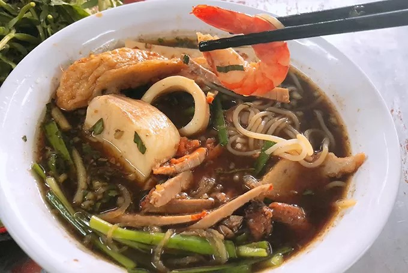
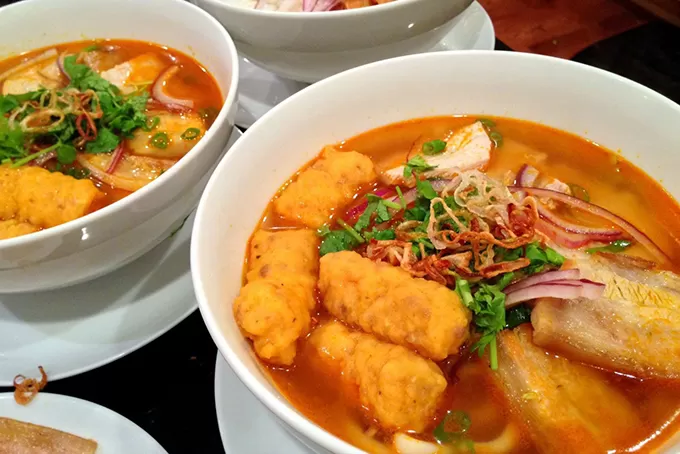

Đúng như tên gọi, khu ẩm thực chợ Bến Thành chính là nơiđáp ứng nhu cầu vui chơi ăn uống không chỉ của người dân Sài Gòn mà còn cả các du khách tham quan.
Chợ Bến Thành nằm ở trung tâm quận 1 TPHCM, được biết đến là một biểu tượng lâu đời về lịch sử và văn hoá của Sài Gòn. Đây có thể coi là khu chợ nổi tiếng nhất Việt Nam nhờ vào hoạt động buôn bán rất sôi nổi với đa dạng các mặt hàng cùng với đó lối kiến trúc đặc trưng của người Pháp vào thế kỉ 19.Ngoài những lý do nêu trên, chợ Bến Thành còn được biết đến rộng rãi nhờ vào khu ẩm thực chợ Bến Thành.
Khu ẩm thực chợ Bến Thành là thiên đường ẩm thực Sài Gòn, hội tụ những món ngon đặc trưng từ ba miền
đất nước và cả ẩm thực quốc tế, mang đến trải nghiệm ăn uống phong phú và hấp dẫn cho du khách.

Với đa dạng các món ăn như: Chè chuối nướng, bánh canh, bún mắm,… thì du khách sẽ có một trải nghiệm vô cùng phong phú với ẩm thực đến từ cả ba miền Bắc – Trung – Nam, tất cả đều được quy tụ tại đây. Dù ngày hay đêm, nơi đây vẫn luôn tấp nập náo nhiệt, không chỉ đến từ các thực khách đang tìm tòi khám phá ẩm thực Việt, mà còn là những cư dân đang tìm tới những bữa ăn quen thuộc. Đây là một địa điểm không thể bỏ qua đối với du khách nếu muốn có một trải nghiệm bao quát về ẩm thực Việt Nam.


Địa chỉ: Phường Bến Thành, Quận 1, Thành phố Hồ Chí Minh, Việt Nam
{kind=link}
{kind=link}
{kind=link}